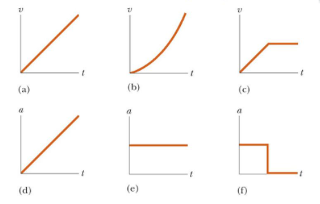
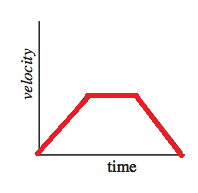
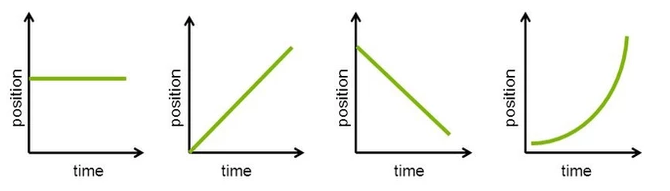
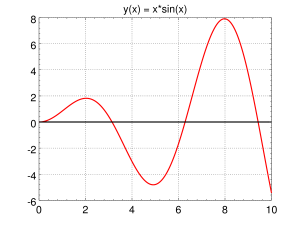
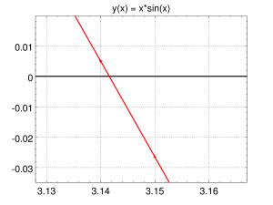
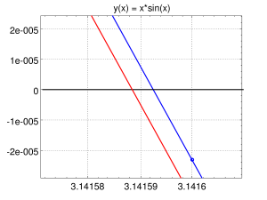
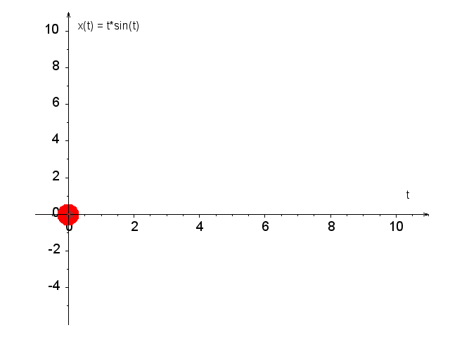
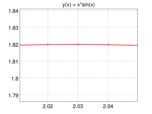
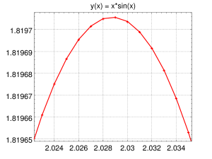
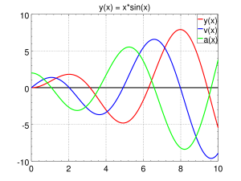

Pochodna (2)¶
Druga część materiału o pochodnych.
Wykład¶
- Materiały: Pochodne2.pdf
- Karta wzorów
- Starsza prezentacja
{kind=link}
Zadania do wykonania ręcznie¶
Zadanie 1. Powiąż wykresy prędkości z wykresami przyspieszeń:

Zadanie 2. Narysuj wykres położenia od czasu i przyspieszenia od czasu:

Zadanie 3. Narysuj wykresy prędkości od czasu i przyspieszenia od czasu:

Zadanie 4. Narysuj wykres położenia od czasu, wiedząc, że:

Zadanie 5. Jeżeli małpka na sprężynie porusza się wzdłuż jednej prostej, np. w kierunku góra–dół, to w punktach maksymalnego wychylenia jej prędkość znika. Jak ta obserwacja ma się do sposobu ustalania ekstremów funkcji za pomocą pochodnych?
Zadanie 6. Rozpatrzmy funkcję
- Znajdź równanie prostej, która aproksymuje tę funkcję w pobliżu punktu \(x=0\).
- Uzasadnij, że dla dostatecznie małych \(x\) wartość \(\sqrt{1+x}\) można przybliżyć wyrażeniem \(1+x/2\). Uwaga: jest to tak często używane przybliżenie, że warto je zapamiętać.
- Oszacuj w pamięci wartości \(\sqrt{1.02}\) oraz \(\sqrt{0.96}\).
Zadanie 7. Rozwiń funkcję \(\sin x\) w szereg Taylora w punkcie \(x_0=\pi\).
Zadanie 8. Rozwiń funkcję \(\sin x\) w szereg Taylora w punkcie \(x_0=3\pi/2\).
Zadanie 9. Policz styczną w punkcie \(x_0=1\):
- funkcji \(1/x\),
Zadanie 10. Policz styczną w punkcie \(x_0=1\):
- funkcji \(x\sin(x^2)\).
Zadanie 11. Niech \(y=k\sin(ax)\). Oblicz pochodne cząstkowe:
- \(\dfrac{\partial y}{\partial x}\),
- \(\dfrac{\partial y}{\partial a}\),
- \(\dfrac{\partial y}{\partial k}\).
Zadanie 12. Podaj różniczki następujących funkcji jednej zmiennej:
- \(y(x)=\sin(2x)\),
- \(y(x)=\ln(3x)\),
- \(y(t)=4e^{-3t}\),
- \(y(t)=gt^2/2+v_0t\),
- \(x(t)=\sin(at)e^{-\omega t}\).
Zadanie 13. Podaj różniczki następujących funkcji dwóch zmiennych. Pamiętaj, że w takim przypadku wzór na różniczkę zawiera pochodne cząstkowe:
- \(\psi(t,x)=\sin(kx)e^{-\omega t}\),
- \(f(x,y)=x/y\).
Zadanie 14. Pomiar średnicy pewnego koła dał wartość \(L=31.0\pm0.5\,\mathrm{cm}\). Na tej podstawie oszacowano, że obwód tego koła wynosi \(O=\pi L\approx97.4\,\mathrm{cm}\), a jego pole
Oszacuj niepewność pomiaru:
- długości obwodu tego koła, \(\Delta O\),
- pola powierzchni tego koła, \(\Delta P\).
Zadanie 15. Gdyby średnica koła wzrosła 2 razy, to jego obwód również wzrósłby 2 razy, natomiast pole jego powierzchni powiększyłoby się 4 razy. Przypuśćmy, że niepewność pomiarową długości średnicy koła uda się zredukować o 50%. Jak wpłynie to na zmianę niepewności pomiarowej:
- obwodu koła, \(\Delta O\)?
- pola powierzchni koła, \(\Delta P\)?
Zadanie 16. Korzystając z prawa Ohma, \(R=U/I\), wyznacz opór elektryczny \(R\) i oszacuj błąd pomiaru tej wielkości, jeżeli \(U=10.00\,\mathrm{V}\), \(\Delta U=0.10\,\mathrm{V}\), \(I=5.00\,\mathrm{A}\), a \(\Delta I=0.05\,\mathrm{A}\).
Zadania do wykonania przy asyście komputera¶
Zadanie 1. Wyznacz komputerowo ekstremum funkcji:
- \(x^x\),
- \(x^{-x}\),
- \(x^3-3x^2+4\),
- \(e^x-2x^2\).
Zadanie 2. Przeanalizuj poniższy kod rysujący funkcję i jej pochodną. Wybierz następnie inną, bardziej skomplikowaną funkcję. Sprawdź na wykresie, gdzie pochodna się zeruje, a następnie ustal, czy otrzymany punkt stacjonarny jest minimum, maksimum czy nie jest ekstremum. Punktów przegięcia nie należy utożsamiać z zerami pierwszej pochodnej — ich występowanie wiąże się ze zmianą wypukłości funkcji i można je badać m.in. za pomocą drugiej pochodnej.
% Define the function and numerical derivative
f = @(x) x.^2; % Function
numerical_derivative = @(f, x, dx) (f(x + dx) - f(x)) ./ dx; % Numerical derivative
% Parameters
dx = 0.0001; % Small step size
x_values = linspace(-10, 10, 500); % Generate x values
f_values = f(x_values); % Calculate function values
derivative_values = numerical_derivative(f, x_values, dx); % Calculate derivative values
% Plot the function and its derivative
figure;
hold on;
% Plot f(x)
plot(x_values, f_values, 'b-', 'LineWidth', 2, 'DisplayName', 'f(x) = x^2');
% Plot f'(x)
plot(x_values, derivative_values, 'r--', 'LineWidth', 2, 'DisplayName', 'f''(x) = 2x');
% Labels and Legend
title('Function and its Derivative', 'FontSize', 16);
xlabel('x', 'FontSize', 14);
ylabel('y', 'FontSize', 14);
legend('show', 'Location', 'northwest');
% Ensure the same ratio of axes
axis equal;
grid on;
hold off;
Zadanie 3. Zbadaj właściwości funkcji
dla \(0\le t\le10\). Zadanie jest ćwiczeniem na rysowanie wykresów w Octave i korzystanie z funkcji fzero.
Plan działania
Krok 1. Zrób wykres tej funkcji dla \(0\le t\le10\). Aby uzyskać czytelny wykres, możesz użyć następującego ciągu instrukcji:
N = 1001;
tmax = 10;
t = linspace(0, tmax, N);
x = @(t) (t .* sin(t));
# v = @(t) (...); # <-- odkomentuj i uzupełnij później
# a = @(t) (...); # <-- odkomentuj i uzupełnij później
fig = plot(t, x(t), "-r", t, 0*t, "-k");
ax = gca(); # uchwyt do opisu osi
leg = legend(); # uchwyt do legendy wykresu
set(ax, "fontsize", 20);
set(ax, "xminortick", "on");
set(ax, "yminortick", "on");
set(leg, "fontsize", 20);
set(fig, "linewidth", 2);
title("x(t) = t*sin(t)");
grid on;
Przykładowy wynik:

Krok 2. Na podstawie wykresu oszacuj, ile ta funkcja ma miejsc zerowych, maksimów, minimów i punktów przegięcia na przedziale \(0\le t\le10\).
Krok 3. Na podstawie wykresu oszacuj, dla jakich wartości \(t\) funkcja \(x(t)\) jest rosnąca, malejąca, wklęsła i wypukła.
Krok 4. Miejsca zerowe uzyskujemy z rozwiązania równania \(t\sin t=0\), czyli \(t=0\) lub \(\sin t=0\), a więc \(t=0,\pi,2\pi,3\pi\).
Krok 5. Czy miejsca zerowe można łatwo odczytać z wykresu? W instrukcji plot dodaj parametr +:
Powiększ wykres wokół drugiego miejsca zerowego, czyli \(\pi\). Należy zauważyć, że Octave rysuje wykres z odcinków łączących kolejne punkty, jest więc przybliżoną reprezentacją rzeczywistej krzywej. Jeśli kolejne wartości argumentu \(t\) użyte do rysowania wykresu są oddalone od siebie o \(0.01\), oszacuj dokładność takiej aproksymacji. Można oczekiwać, że błąd interpolacji pomiędzy sąsiednimi punktami jest rzędu \(h^2\), gdzie \(h\) to połowa odległości między kolejnymi wartościami argumentu. W naszym przypadku \(h^2=0.000025\).



Skrypt: anim.txt użyty do przygotowania animacji.
Krok 6. Położenia miejsc zerowych dowolnej funkcji można wyznaczyć w Octave za pomocą fzero:
Pierwszym argumentem jest funkcja, a drugim przybliżona wartość poszukiwanego miejsca zerowego. Za pomocą tej funkcji znajdź kolejne miejsca zerowe funkcji \(x(t)=t\sin t\) w przedziale \(0\le t\le10\) i sprawdź, że rzeczywiście są równe \(0\), \(\pi\), \(2\pi\) i \(3\pi\).
Krok 7. Skoro znamy już punkty zerowe funkcji \(x(t)\), czas na wyznaczenie ekstremów. Najprostsze podejście polega na powiększaniu wykresu w okolicach punktu, w którym spodziewamy się występowania minimum lub maksimum. Zwiększ następnie liczbę punktów siatki:
Sprawdź, jak zmienia się oszacowanie położenia maksimum. Zmianie argumentu \(\Delta t=0.001\) odpowiada w pobliżu ekstremum znacznie mniejsza zmiana wartości położenia \(\Delta x\), rzędu \((\Delta t)^2\). Wykonaj podobną analizę dla drugiego maksimum lub pierwszego minimum.


Krok 8. Zamiast szukać maksimum lub minimum bezpośrednio, znajdź miejsca zerowe pochodnej funkcji \(x(t)\). Zdefiniuj funkcję \(v(t)\) jako pochodną \(x(t)\):
Trzy kropki zastąp odpowiednią definicją.
Krok 9. Wykonaj rysunek \(x(t)\) i \(v(t)\).
Krok 10. Wyznacz wszystkie punkty zerowe funkcji \(v(t)\) za pomocą fzero. Zapisz ich wartości.
Krok 11. Dokładność wyznaczenia miejsca zerowego można sprawdzić, wywołując fzero w następujący sposób:
>> [X, FVAL, INFO, OUTPUT] = fzero(v, 2)
X = 2.02875783811044
FVAL = -4.44089209850063e-015
INFO = 1
OUTPUT =
scalar structure containing the fields:
iterations = 7
funcCount = 10
bracketx =
2.02875783811043 2.02875783811044
brackety =
3.33066907387547e-016 -4.44089209850063e-015
Składowa OUTPUT.bracketx informuje, że miejsce zerowe funkcji \(v(t)\) znajduje się pomiędzy 2.02875783811043 a 2.02875783811044. W analogiczny sposób zbadaj dokładność wyznaczenia innego miejsca zerowego \(v(t)\).
Krok 12. Zdefiniuj \(a(t)\) jako pochodną \(v(t)\).
Krok 13. Wykonaj wspólny rysunek \(x(t)\), \(v(t)\) oraz \(a(t)\).

Krok 14. Wyznacz miejsca zerowe \(a(t)\). Czy odpowiadają one punktom, w których \(v(t)\) ma minimum lub maksimum?
Krok 15. Ile wynosi globalne minimum i maksimum \(x(t)\) na badanym przedziale \(0\le t\le10\)?
Krok 16. Położenie pewnego obiektu poruszającego się po linii prostej wzdłuż osi \(x\) dane jest równaniem
gdzie położenie \(x\) mierzone jest w metrach, a czas \(t\) w sekundach. Jaką drogę, z dokładnością do \(0.01\,\mathrm{m}\), przebył ten obiekt w ciągu pierwszych 10 sekund ruchu?
Wskazówka: w poprawnej odpowiedzi cyfra 4 występuje 2 razy.